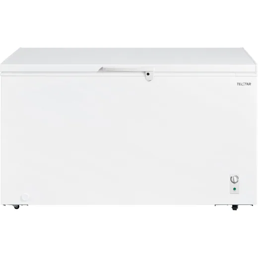
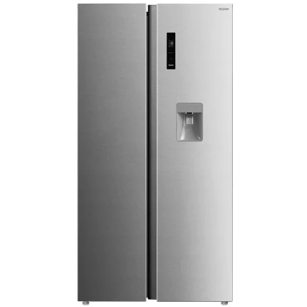
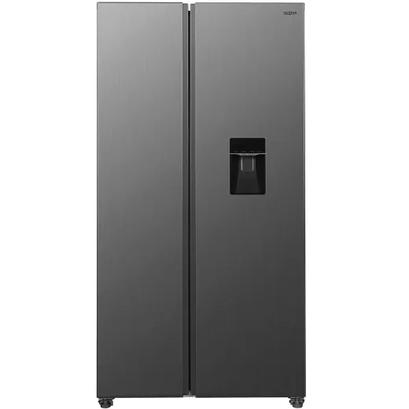
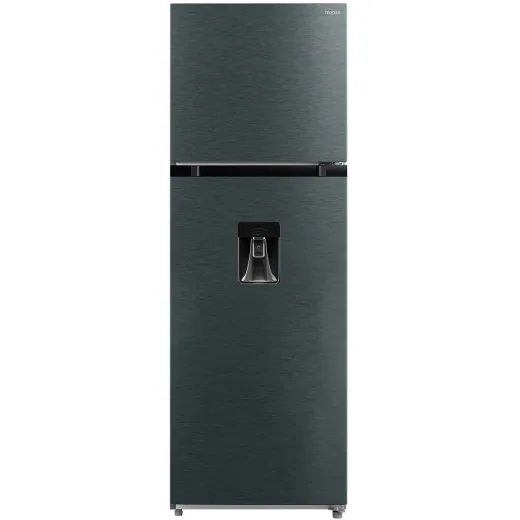
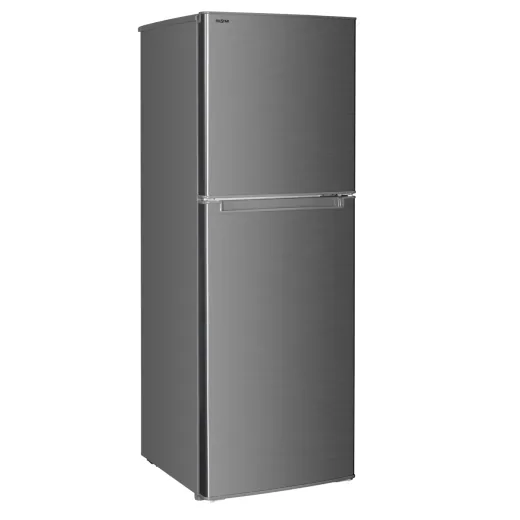
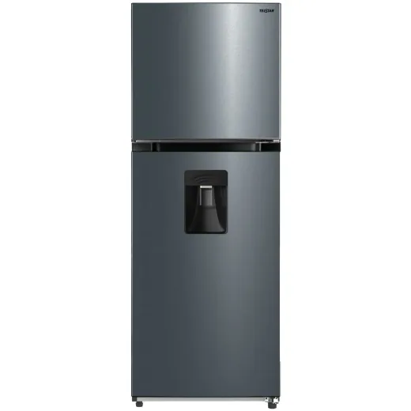

Inicio › Refrigeradoras y congeladores › Telstar
Refrigeradoras y congeladores Telstar en Honduras: precios comparados
6 productos Telstar en 1 tiendas (Gallo más Gallo). Desde L 6,795.01.

Congelador Horizontal Telstar 15CP 418 Litros TCH425121MDL 13,995.01En Gallo más Gallo
Refrigeradora Side by Side Telstar 20CP 555 Litros TRX566322MDL 18,995En Gallo más Gallo
Refrigeradora Side by Side Telstar 16CP 439 Litros TRX470510HML 19,995En Gallo más Gallo
Refrigeradora Automática Telstar 12CP 338 Litros TRA338541MDL 10,595En Gallo más Gallo
Refrigeradora semiautomática Telstar 5.5CP 134 Litros TRS142510HML 6,795.01En Gallo más Gallo
Refrigeradora Semiautomática Telstar Compactos 7CP 202 Litros TRS225540MDL 6,995En Gallo más Gallo
Preguntas frecuentes
¿Dónde están más baratos los refrigeradoras y congeladores Telstar en Honduras?
Revisa cada producto: mostramos el precio en cada tienda.